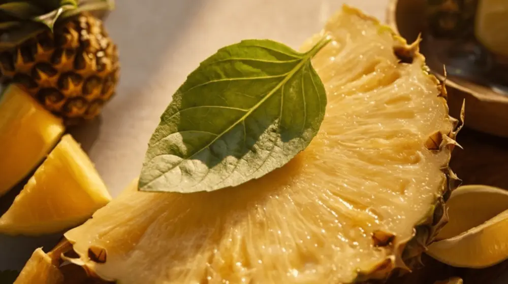
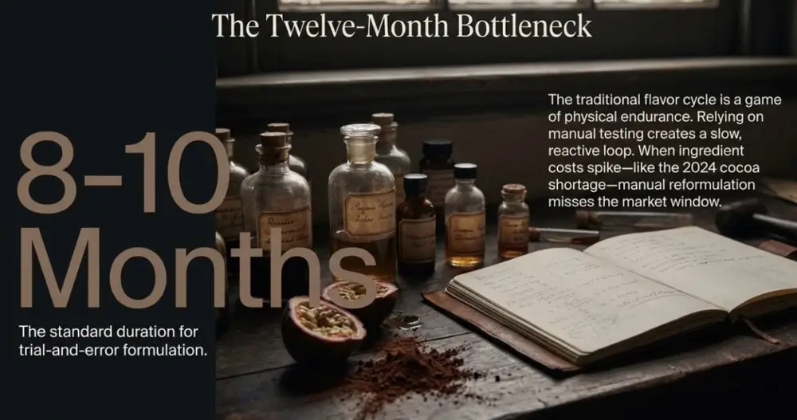
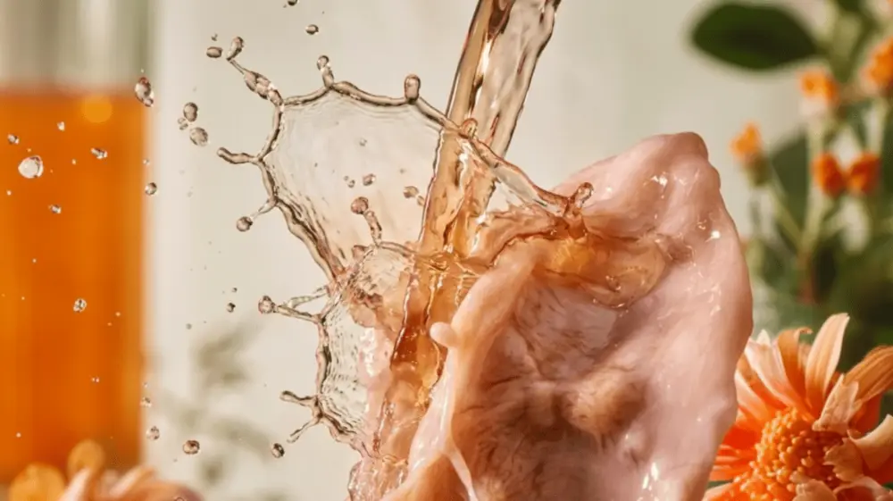
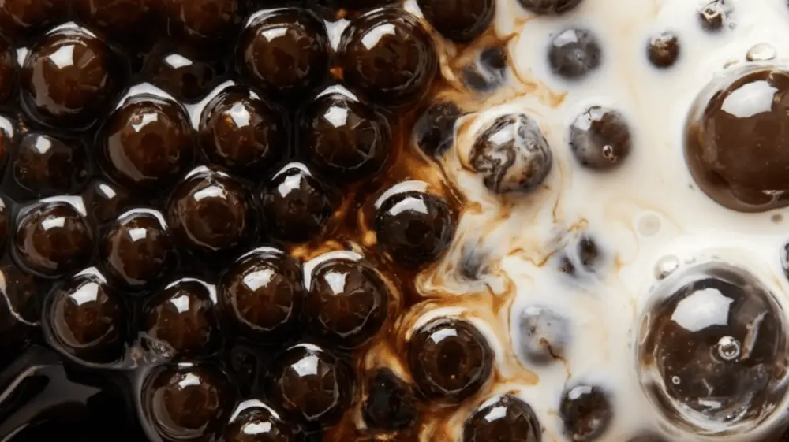

Articles / Tips & trends
AI in Beverage R&D: How Technology is Speeding Up Flavor Development
2026-01-19 · Industry Trends, Industry Trends

Artificial intelligence compresses beverage R&D cycles from the traditional 6-12 months down to 3-5 months. According to 2025 data from Symrise’s Food & Beverage division, AI systems that combine flavorist expertise with machine learning predict sensory performance with precision while meeting sugar-reduction and sodium-reduction health demands. Belgian researchers at KU Leuven University trained AI to analyze 226 chemical properties across 250 beers, successfully predicting flavor profiles and consumer preferences—actual testing confirmed that beers adjusted based on AI recommendations scored higher in taste panels.
Traditional Flavor Development Timeline Constraints
Beverage manufacturers historically relied on manual testing of dozens or hundreds of formula combinations to identify optimal flavors. Flavorists repeatedly adjusted ratios of ingredients like pineapple, passion fruit, basil, or cardamom—each iteration requiring physical sample production, sensory testing, and consumer surveys. This trial-and-error approach typically consumed 8-10 months with no guarantee the final formula would capture market trends accurately.
When ingredient shortages or cost pressures forced reformulation, traditional methods proved particularly inadequate. After cocoa prices hit record highs in 2024, many beverage brands urgently needed alternative flavor profiles to maintain stable product lines, but manual testing of substitute formulas took so long that market opportunity windows closed.


AI Predictive Modeling Cuts Testing Cycles
NotCo’s Giuseppe platform auto-compiles formulation options, swaps ingredients under cost or regulatory constraints, and simulates sensory impacts before any lab time begins. After analyzing databases of successful flavor combinations and market trends, the system directly recommends optimal pineapple and passion fruit ratios along with unexpected pairings like basil or cardamom for tropical beverage development. R&D teams avoid physically mixing hundreds of variations—AI models simulate flavor interactions before reaching the bench, accelerating iteration speed 3-4 fold.
PepsiCo used AI-driven consumer insights to rapidly develop Propel fitness water with immunity-boosting ingredients and launched Strawberries ‘N’ Cream and Cream Soda flavors of Pepsi Zero Sugar in 2025. Molecular Cola employed AI-guided systems combined with molecular gastronomy techniques to engineer flavor molecules through fermentation, compressing the entire development cycle from concept to market launch into just 4 months.
Machine Learning Flavor Performance Prediction
AI integrates data from analytical systems including electronic nose (E-nose), electronic tongue (E-tongue), and gas chromatography-mass spectrometry (GC-MS) to build correlation models between flavor compounds and sensory perception. Deep learning algorithms excel at handling complex nonlinear datasets, identifying subtle flavor interactions that human flavorists struggle to detect.
Explainable AI tools like Shapley Additive Explanations (SHAP) enable R&D teams to understand why models recommend specific formulas. Systems don’t just output suggested ratios—they display each ingredient’s contribution to overall flavor, helping flavorists make precise adjustments based on AI recommendations. This human-machine collaboration mode combines data-driven prediction with sensory professional judgment, achieving superior results compared to relying purely on experience or complete automation.


Functional Beverage Market Applications
Functional beverage categories lead in AI adoption. Energy drinks, protein shakes, and immunity-boosting beverages require rapid innovation cycles and precision-targeted marketing—both benefit from AI’s speed and data processing capabilities.
Synergy Flavors research shows consumers link citrus flavors with immune support functions (53% of respondents expressed interest) and associate spices like ginger with immunity benefits (30% of respondents). After analyzing such data, AI systems rapidly scan available information, analyze successful pairing cases, and generate optimized formulas meeting both flavor and functional requirements, launching products ahead of competitors.
Diageo’s FlavorPrint technology uses AI to provide real-time cocktail recipe recommendations matched to personal flavor preferences. After the system asks consumers about their affinity for ingredients like rosemary, chilies, ginger, and orange juice, it matches responses against a database to recommend corresponding products. The What’s Your Whisky platform attracted over 1 million users post-launch, with success rates prompting Diageo to consider expanding the technology to tequila and beer categories.
Regional Flavor Customization Precision
AI analyzes consumer behavior and regional taste preferences, helping manufacturers develop flavors that resonate deeply with target audiences. When launching beverages for Southeast Asian markets, AI can guide formulations toward lychee, calamansi, or tamarind based on local popular flavor profiles, precisely balancing sweet-sour-aromatic ratios.
Tastewise’s platform analyzes millions of social media posts to reveal consumer trends, helping brands complete new product development within 12 months. The system conducts real-time analysis of product attribute-level shifts, tracking which flavors trend, which health claims gain traction, and how sustainability expectations vary by region or demographic. These insights let brands predict trends before consumers articulate demands explicitly.
Traditional market research relies on surveys, focus groups, and delayed sales reports—AI analyzes millions of data points including social conversations, online search trends, and real-time sales patterns. Trends like 24% growth in electrolyte-infused spirits and 26% increase in collagen beverage market demand are examples where AI systems detected shifts early and helped brands position accordingly.
Ingredient Waste Reduction and Development Cost Savings
When AI recommends alternative ingredients, it maintains flavor profiles without compromising quality or compliance. Whether replacing synthetic flavors with natural components or adjusting formulas to meet regulatory guidelines, AI provides precision difficult to match manually. Simulation testing reduces physical ingredient consumption, saving 15-25% development costs per project.
Coca-Cola’s Y3000 Zero Sugar beverage combined AI and human input in co-creation. After analyzing consumer and market data, AI suggested flavor combinations, packaging, and other aspects, aiming to develop products based on how soft drink consumers envision the future through emotions, aspirations, colors, and flavors. This approach enables creative ideation and data validation simultaneously, avoiding market misalignment caused by subjective preferences.
For supply chain optimization, AI predicts demand patterns helping retailers and distributors maintain adequate sales volumes without inventory bloat. Major beverage manufacturers expanded partnerships with cloud providers to scale these model applications across markets and product lines. Real-time sensor analytics validate sanitation steps ensuring line compliance, while vision and spectroscopy tools monitor turbidity, foam, and fill levels without wasting samples.
Taiwan Bubble Tea Industry Competitive Advantages
Taiwan controls 70% of the global bubble tea ingredient market, with 40 years of manufacturing experience establishing quality standards and innovation capabilities that provide a solid foundation for AI applications. Manufacturers with comprehensive HACCP, ISO 22000, and FSSC 22000 certifications can integrate AI systems under strict quality control, ensuring flavor innovation while maintaining food safety compliance.
Local R&D teams familiar with Asian market preferences capture cultural nuances more effectively when using AI to analyze regional consumption trends. Variations on classic flavors like brown sugar pearls, taro, and purple sweet potato can rapidly test new formula feasibility through AI predictive modeling, shortening the time gap from inspiration to commercialization.
Powder products support customization adjustments in taste, color, and texture—combined with AI recommendations, they can more precisely meet different market demands. Syrup series use natural flavors and colorings, with AI helping optimize juice concentration and sweetness balance to create differentiated product portfolios. Customization services cover flavor innovation, tapioca pearl customization, and packaging design, with AI systems predicting formula stability and market acceptance early on, reducing development risk.


Reference Sources
- Nature Communications – AI-driven beer flavor prediction study
- Food Ingredients First – Symrise AI flavor development 2025
- Prepared Foods – AI accelerates beverage innovation
- Beverage Industry – AI applications in beverage manufacturing
- Wiley Online Library – Artificial intelligence and food flavor research
Frequently Asked Questions
Not entirely. AI excels at data analysis and predictive modeling, but sensory evaluation, cultural insights, and creative intuition still require human expertise. Symrise emphasizes a hybrid model “combining flavorist expertise with machine learning”—AI provides data-driven recommendations that flavorists refine based on experience, achieving superior results compared to single approaches.
Start with existing platform services. SaaS tools like Tastewise and Simporter offer trend analysis and formula recommendations without building in-house systems. Partnering with flavor suppliers like Symrise or Givaudan provides access to AI-assisted formulation services. Initial investment should focus on consumer insights and trend forecasting, scaling to custom model development as business grows.
Quite the opposite. AI scans global flavor databases to discover combinations human flavorists never considered, such as basil with passion fruit or cardamom with pineapple—atypical pairings. UK-based Circumstance Distillery’s AI program Ginette, after exposure to thousands of botanical recipes, created the gin “Monker’s Garkel,” proving AI can break traditional formula frameworks to provide innovative inspiration.
AI systems have built-in regulatory databases, excluding non-compliant ingredients or ratios during formula recommendation stages. NotCo’s Giuseppe platform swaps ingredients under regulatory constraints and tests stability and solubility limitations, ensuring formulas meet requirements across markets. Real-time sensor analytics validate sanitation steps, while vision and spectroscopy tools monitor product quality—machine learning performs excellently in identifying hazards like mycotoxins.
Varies by brand scale and application depth. Functional beverage brands typically see results within 6-12 months due to short product innovation cycles and high demands for market response speed. Traditional beverage manufacturers may need 12-18 months to establish data foundations and team capabilities. Key metrics include 40-60% reduction in formula iterations, 3-5 month shorter time-to-market, and 15-25% lower ingredient waste.
Author: Yenchuan Marketing Research Department
The bubble tea industry stands at a critical moment of technological transition. Taiwan manufacturers’ deep industry knowledge and quality control capabilities, combined with AI predictive modeling and data analytics, can establish even more unshakeable leadership advantages in global markets. The question isn’t whether AI will change the industry—it’s who will integrate these tools first to create differentiated value. Over the past decade we’ve witnessed e-commerce and social marketing reshape consumption patterns; over the next decade, AI-driven precision flavor development will become a core competitive indicator for brands.
If you’d like to explore how AI technology can optimize your product development process or discuss customized flavor solutions, we invite you to schedule a consultation with the Yenchuan team to develop innovation strategies best suited for your business.